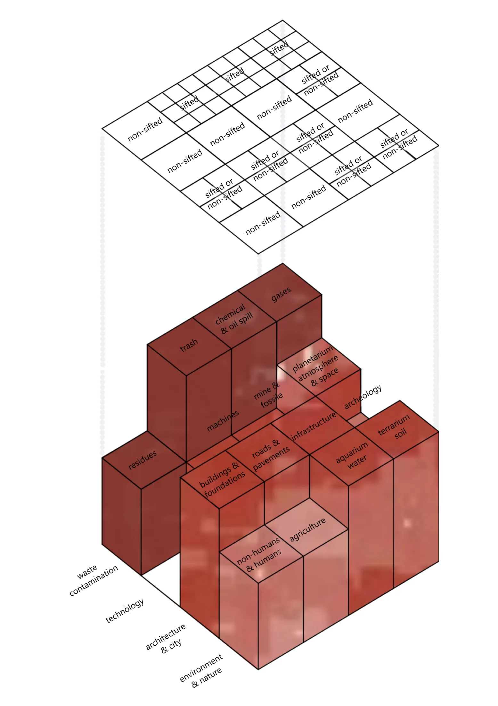
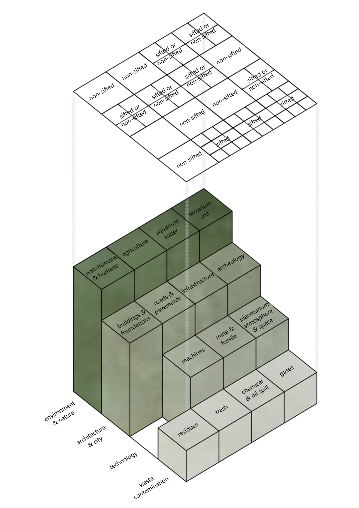

A Multi-Sensory Soil Inventory
"Sifting Ankara Soil" is a multi-sensory soil inventory that directly challenges the detached paradigm of modern, top-down urban planning. Traditionally, urbanism operates under an absolute illusion of mastery, treating the living ground as a flat, passive, and inert surface upon which rigid concrete forms are forcefully imposed. This project shifts our perspective away from a distant, abstracted view of the planet toward an entangled, deeply interconnected worldview (Gaia), recognizing the Earth as an active agent that continuously negotiates with and resists human intervention. By analyzing Ankara’s deep geological layers, active clay behaviors, and systemic environmental failures, the project transforms the geological map from a list of technical engineering constraints into a living design compass.
"Sifting Ankara Soil" initiates a critical architectural discourse through the metaphor of "sifting" the earth. The project systematically dismantles the geographic abstraction of Ankara, analyzing its diverse soil ground types not as passive topography, but as distinct, active "territories". By overlaying a conceptual grid across the city, we "sift" the urban fabric to render these hidden geological realities visible. This process dictates how each ground must be cared for, planned, and built upon according to its unique material agency.
Fundamentally, the project shifts the architectural perspective from the "Blue Marble"—which views the Earth as an objective, peaceful, and stand-alone resource—to "Gaia". In this framework, the Earth is recognized as an active, composite figure where humans and non-humans are deeply entangled, serving as an active agent in our common geostory.
The act of sifting exposes the severe consequences of modern urbanism's "design erasure," which traditionally abstracts the materialities of urban networks and ignores environmental externalities. We approach structural failures in Ankara not as engineering defects, but as physical messages—moments where the Earth speaks back and resists bureaucratic city planning.
Our ground-truthing relies on precise environmental and geotechnical data:
The "Ankara Clay" Hazard: Expansive, smectite-rich clay in southwestern districts (e.g., Çukurambar, METU Campus) possesses a highly volatile "shallow active zone" up to 2 meters deep. Because developers rely on shallow foundations, the soil retaliates against lightweight structures, causing massive shifting pressures, cracked walls, and warped frames.
Severe Erosion and Instability: Utilizing the ICONA model, the project identifies nearly 124,300 hectares at high to very high erosion risk. Fragile tuffs and sandstones in Yenimahalle, Keçiören, and Sincan, combined with inappropriate land use, result in the loss of approximately 625,229 tons of soil annually, triggering landslides and structural shifting.
Our multi-sensory inventory reveals a city expanding directly against the physical capacities of its living substrate:
The Erosion Crisis: Based on ICONA analysis, approximately 124,300 hectares within Ankara's metropolitan territory face high to very high erosion risks. The city suffers an annual soil loss of 625,229 tons (averaging 5.03 tons per hectare each year), heavily impacting expanding districts like Southern Yenimahalle, Keçiören, Western Mamak, Northern Çankaya, Etimesgut, and Eastern Sincan.
Structural Negligence: In booming areas like Çukurambar and Karakuşunlar, lightweight structures are built on shallow foundations only 0.2 to 0.5 meters deep. Because the volatile "Ankara Clay" remains highly active down to depths of 2 meters, these foundations experience massive swelling pressures. This negligence results in severe 45-degree structural cracks, warped door frames, and buckling floor slabs.
Hydrological Disruption: The flat, concrete urban fabric blocks natural drainage. Rainwater gets trapped directly beneath building foundations, constantly activating the clay's swelling pressure. The city has essentially transformed into a giant, self-destructive moisture trap.
To address these crises, the project establishes a straightforward, non-negotiable framework for future development:
For Existing Urban Fabric: Stop the unsustainable "demolition-and-rebuild" cycles. Instead, install perimeter drainage (1–1.5m deep), regrade terrain away from structures, and deepen shallow foundations below 2 meters. Areas facing extreme, unfixable structural deformation must undergo a process of planned abandonment and be returned to nature as ecological regeneration zones.
For New Construction: Mandatory 2-meter soil coring and clay suitability tests are strictly required before any planning approval. Building permits must be automatically denied in high-erosion zones. In active clay areas, foundations must exceed 2 meters, use suspended structural slabs, and incorporate expansion joints every 10–12 meters to allow the architecture to move safely with the earth.
Through the sifting process, we categorize the urban substrate into specific geological territories, determining what gets sifted and what remains unsifted based on structural and ecological viability.
Undifferentiated Volcanics & Pelagic Limestone: Act as reliable, monolithic bedrocks offering exceptional foundation strength.
Clastics, Carbonates & Quaternary Soils: Present high fertility but carry significant hazards like slip planes, landslides, and low bearing capacity, requiring deep pile foundations.
Basic/Ultrabasic Rocks & Schist Formations: Offer premium construction material but introduce errors such as "serpentine syndrome" (toxicity) and unpredictable bearing capacity.
Moving from the macro-urban scale to a scaleless, granular perspective, the project zooms into specific "scenes"—neglected, atrophied, or waste-filled terrains within and around the city. To intervene, we deploy dynamic "sifters"—speculative architectural agents whose density and flexibility transform according to the landscape they inhabit.
This intervention is rooted in Bruno Latour’s concept of Living with Frankenstein. Rather than erasing our industrial and technological creations (landfills, mine pits, oil spills), we accept them as legitimate elements of urban design worthy of attention and respect. The sifter evaluates these scenes through a critical matrix of dualities to determine the required care:
Care or Not-Care? In Attention or Abandoned? Internal or External? Love or Hate? Worthy or Un-Worthy? Opportunity or Threat? Wanted or Unwanted? Potential or Error? Not-Sifted or Sifted?
These diagnostic questions map across multi-dimensional matrices, evaluating layers from "waste contamination" to "environment & nature," and from "trash" and "residues" to "humans & non-humans".
Ecological crises are often reduced to objective "matters of fact" that propose green technocapitalism as the sole remedy. "Sifting Ankara Soil" reclaims these crises as "matters of concern," synthesizing scientific data with sensible experience.
Inspired by Design Earth’s Trash Peaks—which reimagines urban waste flows through projects like the Plastisphere, Janus Incinerator, and Leachate Cenotaph—our final outputs are "After-Sift" collages and axonometric projections. These architectural drawings act as primary devices to make absent things visible, rendering infinite dimensions and planetary scales. By transforming marginalized externalities into a new mythology of the Earth, the project provides sensible stories and 'what if' scenarios that envision new paradigms for living on a damaged, yet fiercely communicative, planet.
In this specific scene, the transition from the analytical "sifter" phase to the speculative "after-sift" condition vividly demonstrates the application of our diagnostic framework. Initially, the gridded hillside reveals a substrate overwhelmed by uncared-for externalities: scattered refuse, toxic leaks, and construction debris, all crowned by an abandoned concrete monument that symbolizes the failures of geographic abstraction. Through the sifting process, these detected "errors" are reclaimed as matters of concern. Drawing directly from Design Earth’s Trash Peaks, the passive concrete structure at the summit is replaced by an active, speculative architectural apparatus—a new monument dedicated to collecting, processing, and metabolizing the landscape’s historical waste. Purged of its unmanaged toxicities, the slope is radically remediated into a hybridized ecosystem where the technosphere and the biosphere deeply entangle. In the spirit of Latour's "Living with Frankenstein," machines are not expelled but are integrated to actively care for the environment; autonomous agricultural drones nurture the terrain alongside thriving, non-human inhabitants. Ultimately, this after-sift scene transcends the dichotomy of nature versus machine, evolving into a resilient agricultural landscape that allows the inherent metabolism of the soil to function, breathe, and flourish within a newly constructed ecology of care.
Shifting from the macro-territorial to the intimate human scale, this scene reconfigures the sifting apparatus into a localized, less rigid analytical grid. At this tactile resolution, the initial sifter acts as a forensic diagnostic, detecting the fragmented detritus of industrial modernity—scattered plastics, synthetic residues, and discarded machine parts—and classifying them as immediate anthropogenic "errors" disrupting the substrate. In the speculative "after-sift" condition, the remediation of these localized externalities catalyzes the emergence of a new architectural subjectivity: the "Sifterman" persona. Moving decisively beyond the passive, detached observation of the modernist flâneur—who merely navigated the abstracted, paved surfaces of the city as a spectator—the Sifterman embodies an active, deeply entangled stewardship. By stepping barefoot onto the remediated, nutrient-rich earth, equipped simultaneously with the instruments of cultivation and the tools of empirical measurement, this persona learns to live with and care for the ground. This human-scale intervention transforms the act of sifting from a purely analytical framework into a lived practice of terrestrial care, allowing the human agent to actively participate in, and benefit from, the recovered metabolism of the soil.
Confronting an alienated, hostile terrain initially devoid of human presence, the diagnostic sifting apparatus deploys a highly complex grid to identify monumental industrial detritus—such as impenetrable tangles of wire, machine fragments, and concrete rubble—as profound spatial "errors." The speculative "after-sift" condition radically reconfigures this wasteland by metabolizing its accumulated neglect into a new ecological synthesis. The dense, unmovable bundles of debris are conceptually transmuted into provocative vegetative formations, while the distant, oppressive mountains of refuse are boldly reimagined as speculative forests. To functionally anchor this hybridized ecosystem, a "Trash Peak" (drawing from Design Earth’s spatial lexicon) is surgically inserted onto the barren slope; it operates as an active architectural agent that manages the technosphere and orchestrates continuous terrestrial care. Simultaneously, the integration of a "Georama of Trash" in the deep background projects this localized remediation onto the broader urban scale, illustrating the city-wide potential of this metabolic infrastructure. In this fully realized scene, the rigid dichotomies between the natural and the artificial dissolve entirely. Robotic appendages, human stewards, and resilient flora dynamically coexist and adapt, epitomizing the ethos of "Living with Frankenstein" within a meticulously curated, multi-scalar landscape.
Descending into the subterranean micro-scale, this scene penetrates the intricate metabolism of the soil, exposing the vibrant network of non-human creatures that physically construct and sustain the substrate. This intimate resolution fundamentally dismantles the "Blue Marble" paradigm—which abstracts the planet as a distant, passive, and impersonal resource—and forcefully grounds the project in the reality of "Gaia." Within this framework, the Earth is no longer a peaceful, stand-alone globe, but a fiercely active, composite figure where human and non-human destinies are deeply entangled. Crucially, the diagnostic sifter must recalibrate its logic at this depth. Unlike the synthetic detritus and industrial externalities identified as anthropogenic "errors" in the broader urban context, these subterranean organisms—the worms, larvae, ants, and burrowing mammals—are emphatically not anomalies to be filtered out. They possess an absolute, intrinsic right to exist within the geostrata. In the speculative after-sift condition, these entities are reclassified as indispensable collaborators, functioning as vital "supporters of the sifter." They are the primary biological engines of the earth, perpetually digesting, aerating, and regenerating the terrain. By actively validating their presence rather than attempting to over-engineer their habitat, the scene illustrates that profound terrestrial care requires acknowledging the soil’s inherent sovereignty, allowing its native, non-human operators to freely perform the continuous labor of world-making.
Design Earth (Rania Ghosn + El Hadi Jazairy). Geostories: Another Architecture for the Environment.
Ratti, Carlo, Claudel, Matthew. Open Source Architecture, 132-192. London: Thames and Hudson, New York: Actar Publishers, 2018.
Erguler, Z. A., & Ulusay, R. (2003). Engineering characteristics and environmental impacts of the expansive Ankara Clay, and swelling maps for SW and central parts of the Ankara (Turkey) metropolitan area. Environmental Geology, 44, 979–992. https://doi.org/10.1007/s00254-003-0841-y.
Yıldız, N. E., & Kahveci, B. (2024). ICONA modeli kullanılarak toprak erozyonu riskinin tahmin edilmesi: Ankara ili örneği [Estimation of soil erosion risk using ICONA model: The case of Ankara]. Journal of Anatolian Environmental and Animal Sciences, 9(4), 822–831. https://doi.org/10.35229/jaes.1591959.